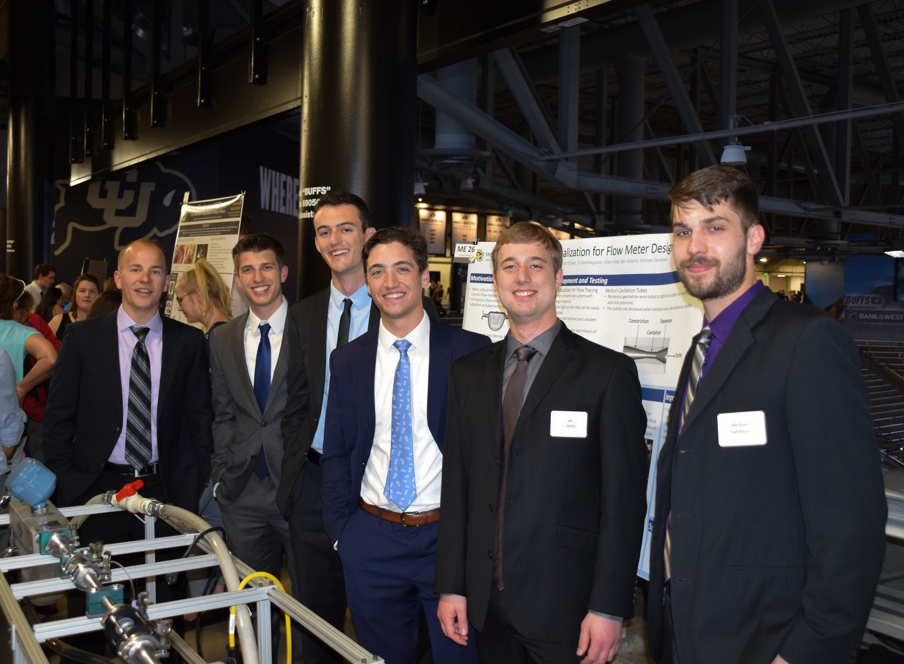
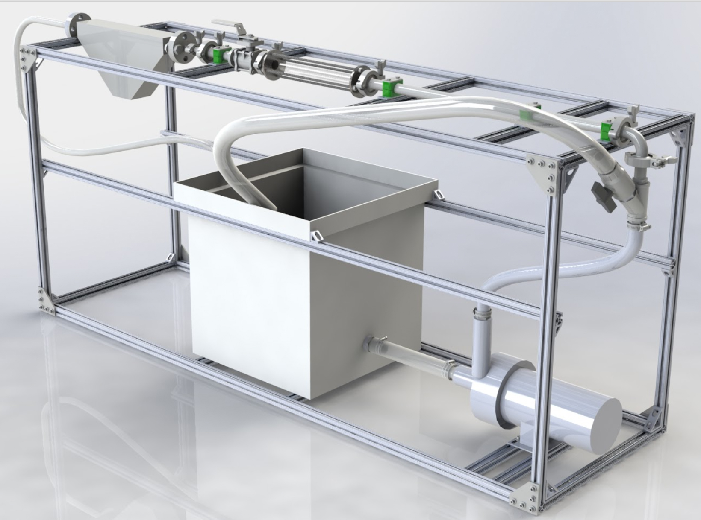

Flow Visualization System
Design Center Colorado
August 2017 - May 2018
This industry sponsored research project was a capstone to my four years at CU boulder. Along with 5 other mechanical engineering students, I developed an application specific flow visualization system for Micro Motion, the industry leader for high accuracy coriolis flow meters. The visualization system was created to help Micro Motion study second-order fluid behaviors in their flow meters to validate/improve assumptions in their computational fluid dynamics (CFD) and finite element analysis (FEA) models.
Due to my previous project management experience at Ball Aerospace, I was elected as project manager by my teammates. Early in the project this meant driving requirements gathering. I lead the team in studying the possible flow visualization systems we could develop and restrictions imposed by Micro Motion’s test stands. After a preliminary design review with the client, we settled on the use of micro bubbles (~100 microns in diameter). This was one of the most challenging tracer particle to form, but it overcame restrictions related to test stands that the client required the system to be compatible with.
The development of modules that would create the micro bubbles for our visualization system was a highly iterative process and required continuous testing. Our access to Micro Motion’s test stands was limited during the development stage of the project, so we needed to develop a test stand that could be used at the University of Colorado. I was heavily involved in the design of this test stand. My main technical challenge in this process was emulating the flow conditions of the Micro Motion test stands with a much smaller continuous duty pump. By implementing a diverting valve system and a large reservoir I was able to achieve a wide range of flow speeds without causing harm to the impeller of the pump.
 During the module development phase I was tasked with searching for off-the-shelf micro bubble generation devices. By searching through university studies I was able to find a French supplier that created devices used for applications similar to ours. After multiple conversations that put my French skills and their English skills to the test, it became apparent that our timeline for the project would not aline with their lead times. This, in combination with a successful test of a 3D printed Venturi degassing tube developed by my teammates, led us away from an off-the-shelf option. I then joined my teammates in designing the 3D printed tubes.
During the module development phase I was tasked with searching for off-the-shelf micro bubble generation devices. By searching through university studies I was able to find a French supplier that created devices used for applications similar to ours. After multiple conversations that put my French skills and their English skills to the test, it became apparent that our timeline for the project would not aline with their lead times. This, in combination with a successful test of a 3D printed Venturi degassing tube developed by my teammates, led us away from an off-the-shelf option. I then joined my teammates in designing the 3D printed tubes.
As development turned to testing, I took the lead on video capture and video processing. High speed cameras were used to study the tracer particles generated by the 3D printed Venturi tubes. Many challenges including lighting and equipment limitations made the capture of flow behavior a challenge. Once these issues were overcome and desirable footage was captured, I used Matlab and an open-source particle image velocimetry software called OpenPIV to process the footage and create a vector field of the flow. This analysis surpassed the initial project goals and provided further insight into the visualization system that the client found invaluable.